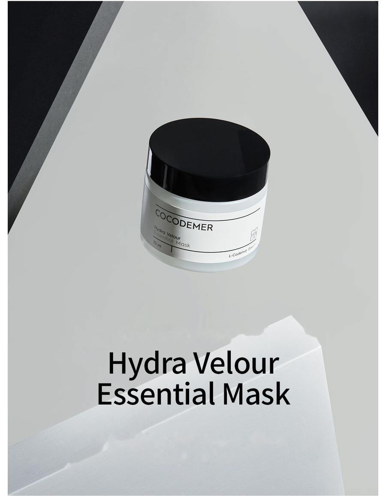
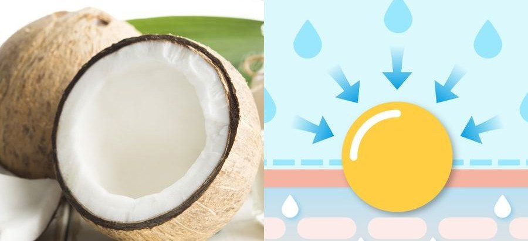
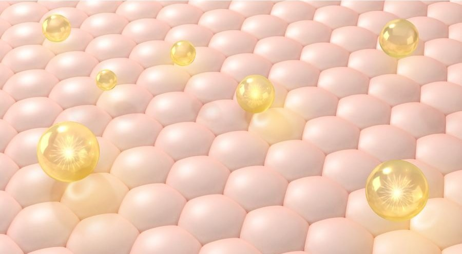

COCODEMER Hydra Velour Essential Mask
| Dung tích | 70ml |
|---|---|
| Phù hợp với | Mọi loại da |
| Công nghệ cốt lõi | L-CODEMAR ELIXIR™ |
| Nhà sản xuất · Đơn vị chịu trách nhiệm phân phối | JUNGCOS CO., LTD. / COCODEMER CO., LTD. |
Sản phẩm này được phát triển trong quá trình triển khai dòng mỹ phẩm theo yêu cầu riêng. Hiện không được bán. Đối với các yêu cầu về tái sản xuất hoặc làm mới, vui lòng liên hệ với chúng tôi qua mục Liên hệ B2B.

Mặt nạ tinh chất giàu dưỡng chất với kết cấu mượt như lụa
Mặt nạ tinh chất cấp ẩm chuyên sâu, bổ sung cho làn da trông mệt mỏi từ bên trong
Cảm giác ẩm mát bừng lên nơi đầu ngón tay hòa cùng các loại dầu mượt như lụa, mang lại lớp hoàn thiện mịn màng, ẩm mượt, không nhờn dính.
Collagen peptide được bao gói siêu mịn, Botox peptide, squalane và các vitamin hoạt tính kết hợp cùng nhiều chiết xuất thực vật. Cùng nhau, chúng đưa dưỡng chất giúp da đàn hồi vào sâu bên trong, giúp làn da mệt mỏi trở nên khỏe mạnh và tràn đầy sức sống.
Công nghệ ổn định Bulky Gel Network cho các chất giữ ẩm tan trong nước biến nền dầu thân thiện với da thành liposome. Các liposome này tạo thành lớp màng ẩm mượt như lụa, ngăn mất nước và hỗ trợ củng cố hàng rào bảo vệ da.
Bulky Hydrogel Emulsion được thu nhỏ thành các hạt nano để thẩm thấu hiệu quả cao. Collagen peptide và Botox peptide, squalane và dầu hạt rum được bao gói và đưa sâu vào da, duy trì độ đàn hồi và sức khỏe làn da.
Nền dầu mượt như lụa bừng lên nơi đầu ngón tay, hòa cùng làn sóng ẩm mát, để lại làn da mịn màng, ẩm mượt, không nhờn dính.
* Nội dung trên chỉ áp dụng cho nguyên liệu cụ thể.
Mã hoạt chất chính
- MoDưỡng ẩmChất dưỡng ẩm
- AwChống nhănChống lão hóa
- WhLàm trắng daLàm trắng da
- TbGiảm tình trạng da có vấn đềGiảm tình trạng da có vấn đề
- BsNềnLàm mềm da

Kết hợp cùng glycerin, chất giữ ẩm thân thiện với da có nguồn gốc từ dầu dừa, thành phần này mang lại vẻ bóng khỏe cho làn da và tạo lớp màng ẩm bảo vệ ngăn mất nước. Độ ẩm được duy trì, và làn da bên dưới luôn ở trạng thái khỏe mạnh.

Thành phần Botox dạng thoa kích thích sản sinh collagen và elastin. Ở làn da mất đi độ săn chắc do sự suy giảm của chúng, thành phần này giúp phục hồi độ đàn hồi và cải thiện nếp nhăn.
Dẫn xuất của vitamin B3 tan trong nước. Thành phần này ức chế sự hoạt hóa tyrosinase để ngăn hình thành melanin và hạn chế tăng sắc tố, đồng thời giảm các hợp chất gây oxy hóa collagen — giúp làm sáng tông da và hỗ trợ ngăn ngừa đốm nâu.
* Nội dung trên mô tả nguyên liệu, không phải sản phẩm hoàn chỉnh.
Xem thông tin thành phần →
L-CODEMAR ELIXIR™
Công nghệ độc quyền của COCODEMER.
Công nghệ bao gói nhũ tương nano-gel đa lớp vượt trội của chúng tôi giữ các hoạt chất cốt lõi — nước dừa, phytosterol, 20 loại axit amin và chiết xuất mật ong — trong một phức hợp ổn định. Phức hợp này sau đó được tạo thành dạng liposome thân thiện với da, mô phỏng cấu trúc của chính làn da, giúp tối đa hóa hiệu quả truyền dẫn vào da.
L-Codemar Elixir™ tăng cường liên kết giữa các tế bào da. Công nghệ này phục hồi hàng rào da bị tổn thương và tạo lớp màng bảo vệ vững chắc, giúp độ ẩm được duy trì lâu hơn.

Văn bản trong hình ảnh phía trên
L-CODEMAR ELIXIR™
- COCONUT WATER
- HONEY EXTRACT
- 20 LOẠI AXIT AMIN
- PHYTOSTEROL

Văn bản trong hình ảnh phía trên
- Vi sinh vật, bụi mịn, bụi vàng, chất ô nhiễm và ô nhiễm không khí
- Mất nước quá mức
Da bị tổn thương
Lipid gian bào bị tổn thương làm suy yếu liên kết giữa các tế bào biểu bì
- Bổ sung lipid gian bào ↑
- Hoạt chất
- Bảo vệ trước tác nhân gây căng thẳng từ bên ngoài và chất ô nhiễm
- Giảm mất nước
Da khỏe mạnh
Lipid được bổ sung phục hồi chất nền gian bào → liên kết giữa các tế bào vững chắc hơn
Hướng dẫn sử dụng
- Ở bước cuối cùng của quy trình chăm sóc da, thoa đều lên toàn bộ khuôn mặt và để sản phẩm thẩm thấu.
- Sau khi sản phẩm đã thẩm thấu, để nguyên qua đêm.
- Sáng hôm sau, rửa nhẹ lại bằng nước ấm.
Mặt nạ tinh chất cấp ẩm chuyên sâu, bổ sung cho làn da trông mệt mỏi từ bên trong
Cảm giác ẩm mát bừng lên nơi đầu ngón tay hòa cùng các loại dầu mượt như lụa, mang lại lớp hoàn thiện mịn màng, ẩm mượt, không nhờn dính.
Collagen peptide được bao gói siêu mịn, Botox peptide, squalane và các vitamin hoạt tính kết hợp cùng nhiều chiết xuất thực vật. Cùng nhau, chúng đưa dưỡng chất giúp da đàn hồi vào sâu bên trong, giúp làn da mệt mỏi trở nên khỏe mạnh và tràn đầy sức sống.
Công nghệ ổn định Bulky Gel Network cho các chất giữ ẩm tan trong nước biến nền dầu thân thiện với da thành liposome. Các liposome này tạo thành lớp màng ẩm mượt như lụa, ngăn mất nước và hỗ trợ củng cố hàng rào bảo vệ da.
Bulky Hydrogel Emulsion được thu nhỏ thành các hạt nano để thẩm thấu hiệu quả cao. Collagen peptide và Botox peptide, squalane và dầu hạt rum được bao gói và đưa sâu vào da, duy trì độ đàn hồi và sức khỏe làn da.
Nền dầu mượt như lụa bừng lên nơi đầu ngón tay, hòa cùng làn sóng ẩm mát, để lại làn da mịn màng, ẩm mượt, không nhờn dính.
Kết hợp cùng glycerin, chất giữ ẩm thân thiện với da có nguồn gốc từ dầu dừa, thành phần này mang lại vẻ bóng khỏe cho làn da và tạo lớp màng ẩm bảo vệ ngăn mất nước. Độ ẩm được duy trì, và làn da bên dưới luôn ở trạng thái khỏe mạnh.
Thành phần Botox dạng thoa kích thích sản sinh collagen và elastin. Ở làn da mất đi độ săn chắc do sự suy giảm của chúng, thành phần này giúp phục hồi độ đàn hồi và cải thiện nếp nhăn.
Dẫn xuất của vitamin B3 tan trong nước. Thành phần này ức chế sự hoạt hóa tyrosinase để ngăn hình thành melanin và hạn chế tăng sắc tố, đồng thời giảm các hợp chất gây oxy hóa collagen — giúp làm sáng tông da và hỗ trợ ngăn ngừa đốm nâu.
* Nội dung trên mô tả nguyên liệu, không phải sản phẩm hoàn chỉnh.
L-CODEMAR ELIXIR™
Công nghệ độc quyền của COCODEMER. Công nghệ bao gói nhũ tương nano-gel đa lớp vượt trội của chúng tôi giữ các hoạt chất cốt lõi — nước dừa, phytosterol, 20 loại axit amin và chiết xuất mật ong — trong một phức hợp ổn định. Phức hợp này sau đó được tạo thành dạng liposome thân thiện với da, mô phỏng cấu trúc của chính làn da, giúp tối đa hóa hiệu quả truyền dẫn vào da. L-Codemar Elixir™ tăng cường liên kết giữa các tế bào da. Công nghệ này phục hồi hàng rào da bị tổn thương và tạo lớp màng bảo vệ vững chắc, giúp độ ẩm được duy trì lâu hơn.
①Ở bước cuối cùng của quy trình chăm sóc da, thoa đều lên toàn bộ khuôn mặt và để sản phẩm thẩm thấu. ②Sau khi sản phẩm đã thẩm thấu, để nguyên qua đêm. ③Sáng hôm sau, rửa nhẹ lại bằng nước ấm.
| Dung tích hoặc khối lượng tịnh | 70ml |
|---|---|
| Phù hợp với | Mọi loại da |
| Hạn sử dụng / thời hạn sử dụng sau khi mở nắp | 30 tháng kể từ ngày sản xuất; sử dụng trong vòng 12 tháng sau khi mở nắp |
| Hướng dẫn sử dụng | Ở bước cuối cùng của quy trình chăm sóc da, lấy một lượng vừa đủ và thoa nhẹ nhàng theo chiều kết cấu da. Để nguyên qua đêm, không cần rửa lại, và làm sạch vào sáng hôm sau. |
| Nhà sản xuất mỹ phẩm | JUNGCOS CO., LTD. |
| Đơn vị chịu trách nhiệm phân phối | COCODEMER CO., LTD. |
| Xuất xứ | Hàn Quốc |
| Thành phần đầy đủ (INCI) | Cocos Nucifera (Coconut) Water, Water, Caprylic/Capric Triglyceride, Methylpropanediol, Glycerin, Dimethicone, Butylene Glycol, 1,2-Hexanediol, Betaine, Niacinamide, Raffinose, Centella Asiatica Extract, Ficus Carica (Fig) Fruit Extract, Panthenol, Honey Extract, Carthamus Tinctorius (Safflower) Seed Oil, Hydrogenated Lecithin, Oenothera Biennis (Evening Primrose) Oil, Sodium Hyaluronate, Acetyl Hexapeptide-8, Adenosine, Alanine, Ammonium Acryloyldimethyltaurate/VP Copolymer, Arginine, Aspartic Acid, Bioflavonoids, Carbomer, Carnitine, Carnosine, Ceramide NP, Cetearyl Alcohol, Cetyl Ethylhexanoate, Citrulline, Creatine, Dimethiconol, Disodium EDTA, Ethylhexylglycerin, Glucosyl Hesperidin, Glutamic Acid, Glutamine, Glycine, Hydrogenated Phosphatidylcholine, Inositol, Isoleucine, Leucine, Methionine, Myristic Acid, Neopentyl Glycol, Diheptanoate, Ornithine, Palmitic Acid, Palmitoyl Pentapeptide-4, Phenylalanine, Phytosterols, Polyglyceryl-10, Myristate, Polyglyceryl-2 Stearate, Polyquaternium-51, Polysorbate 20, Proline, Propanediol, Serine, Squalane, Stearic Acid, Threonine, Tranexamic Acid, Trehalose, Tromethamine, Tryptophan, Tyrosine, Valine, Fragrance (Parfum) |
| Phê duyệt mỹ phẩm chức năng | Giúp làm sáng da. Giúp cải thiện nếp nhăn trên da. |
| Lưu ý khi sử dụng | 1. Nếu vùng da sử dụng xuất hiện đốm đỏ, sưng, ngứa hoặc các triệu chứng bất thường hay tác dụng phụ khác trong hoặc sau khi sử dụng, hoặc sau khi tiếp xúc với ánh nắng trực tiếp, hãy tham khảo ý kiến bác sĩ chuyên khoa. 2. Hạn chế sử dụng trên vùng da bị trầy xước hoặc tổn thương. 3. Lưu ý khi bảo quản và sử dụng a) Để xa tầm tay trẻ em. b) Bảo quản tránh ánh nắng trực tiếp. c) Tránh vùng quanh mắt khi sử dụng. |
| Bảo đảm chất lượng | Nếu sản phẩm có lỗi, việc bồi thường được thực hiện theo Tiêu chuẩn giải quyết tranh chấp người tiêu dùng do Ủy ban Thương mại Công bằng Hàn Quốc ban hành. |
| Liên hệ tư vấn khách hàng | 010-3307-9341 / cocodemer@cocodemer.co.kr |
* Nội dung bắt buộc công bố theo quy định về ghi nhãn và quảng cáo mỹ phẩm của Hàn Quốc. Đây là bản dịch tham khảo; để nhận bản công bố thành phần được chứng nhận, CPSR hoặc CoA, vui lòng liên hệ với chúng tôi qua kênh liên hệ B2B.